DPMS - Steering Column Noise
January 3, 1995YEAR
1994
MODEL
LEGEND
VIN APPLICATION
ALL
BULLETIN NO.
95-001
DPMS Steering Column Noise
SYMPTOM
When the steering wheel column is extended (telescoping function), an audible groaning noise occurs. This noise may be intermittent.
PROBABLE CAUSE
Insufficient lubricant on the telescoping section of the driver's position memory system (DPMS) steering column.
REQUIRED MATERIALS
^ Felt-tip marker
^ Shop towels
^ Super High Temp Urea Grease
CORRECTIVE ACTION
Remove and clean the telescoping section of the steering column, and lubricate it with Super High Temp Urea grease.
1. Center the front wheels and steering wheel, then fully extend the steering column.
2. Remove the driver's side airbag assembly. Refer to section 17 of the service manual for SRS removal and precaution procedures.
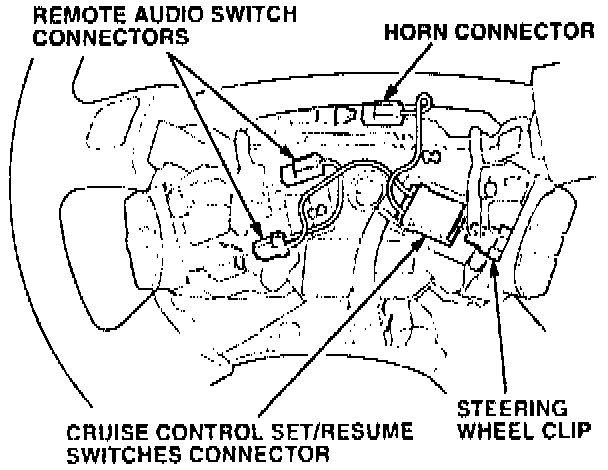
3. Disconnect the connectors for the horn, the remote audio switches. and the cruise control set/resume switches; then remove the steering wheel.
Steering Column:
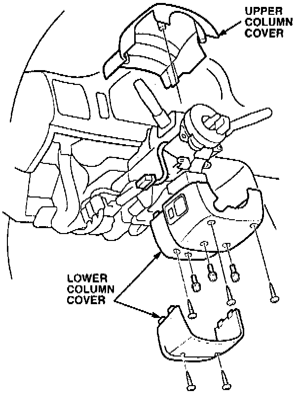
4. Remove the upper and lower column covers (eight screws), and disconnect the steering column switch.
Steering Column:
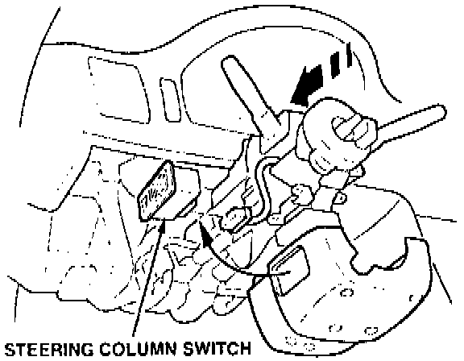
5. Remove the steering column switch from the lower column cover; then reconnect the steering column switch to its connector on the steering column, and fully retract the steering column.
6. Remove the cable reel box and the connector holder from the underside of the steering column. Do not disconnect the cable reel box connector from the SRS wire harness.
Steering Column:
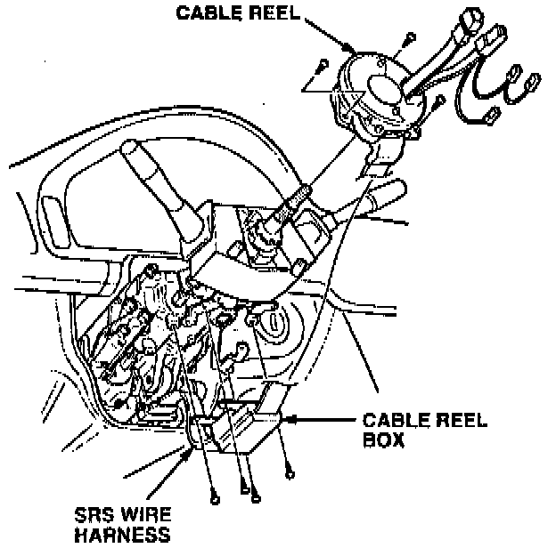
7. Remove the cable reel from the steering column without disconnecting the connector, then lay the cable reel on the floorboard.
Steering Column:
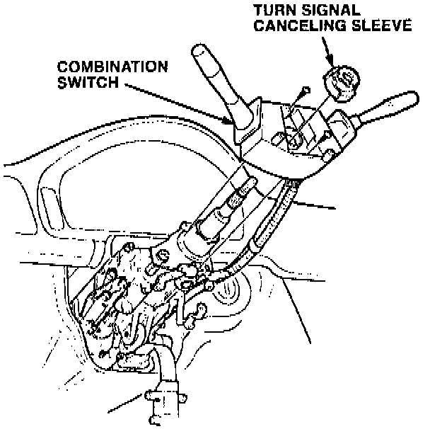
8. Remove the turn signal canceling sleeve and the combination switch assembly from the steering column. Angle the combination switch toward the passenger's side of the vehicle for easier removal.
NOTE:
You do not need to disconnect the combination switch connectors to remove the switch assembly from the steering column.
Steering Column:
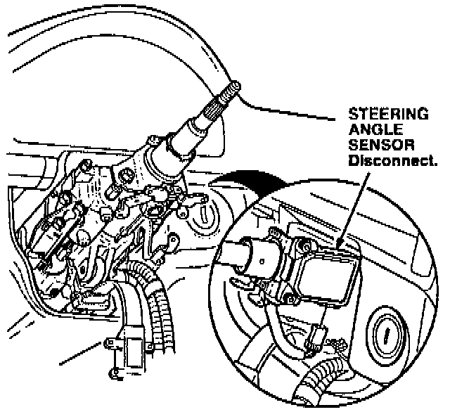
9. If the vehicle is equipped with TCS, disconnect the steering angle sensor connector.
Preload Adjustment:
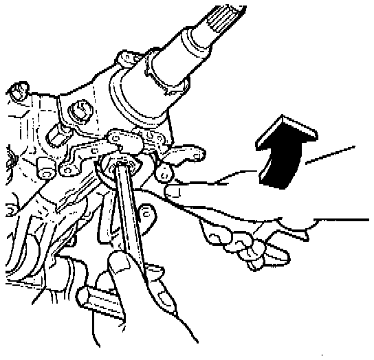
10. Hold the steering column preload adjustment screw with a Hex wrench, and loosen the locknut.
Preload Adjustment:
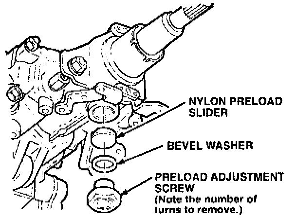
11. Remove the preload adjustment screw, the bevel washer, and the nylon preload slider from the steering column. Note and record the number of turns when removing the screw; this information is necessary for reassembly.
12. With a shop towel, clean the nylon preload slider, and then lubricate it with Super High Temp Urea grease.
Steering Column Assembly:
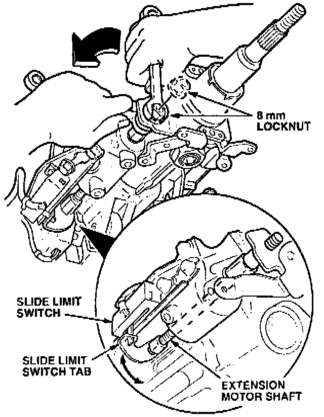
13. Place an open-end 10 mm wrench on the flat side of the extension motor shaft. Hold the extension shaft with the wrench, and carefully loosen the 8 mm locknut.
NOTE:
If the slide limit switch tab on the extension motor shaft should become disengaged from the switch, you will need to realign it during reassembly.
Steering Column Assembly:
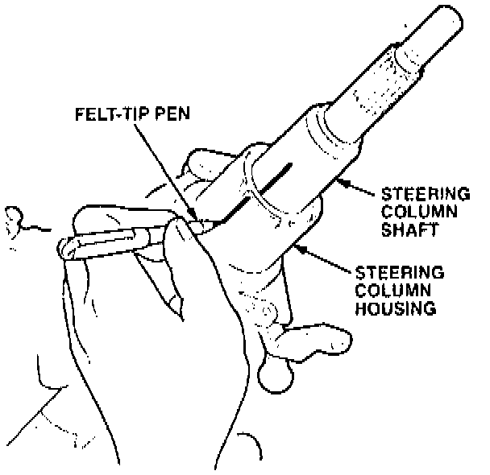
14. Make an alignment mark on the steering column housing to the steering shaft. This alignment mark will be used during reassembly.
Steering Column Assembly:
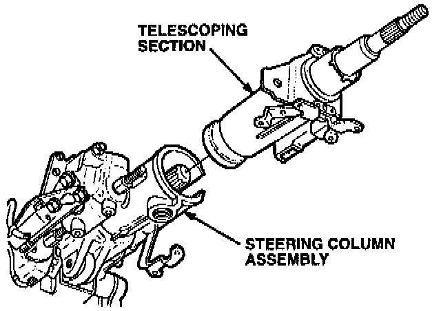
15. Remove the telescoping section of the steering column from the steering column assembly.
Steering Column Assembly:
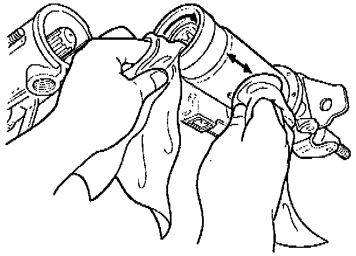
16. With a shop towel, clean the inside spline portion of the steering column shaft, and the outside sliding surface of the telescoping section.
Steering Column Assembly:
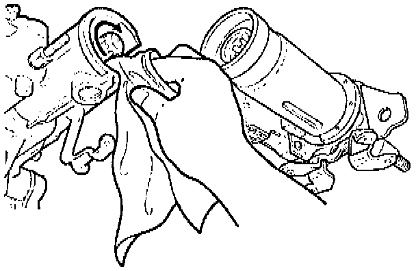
17. With a shop towel, clean the outside spline portion of the steering column shaft, and the inside sliding surface of the steering column assembly.
18. Lubricate all sliding surfaces and both shafts with Super High Temp Urea grease.
Steering Column Assembly:
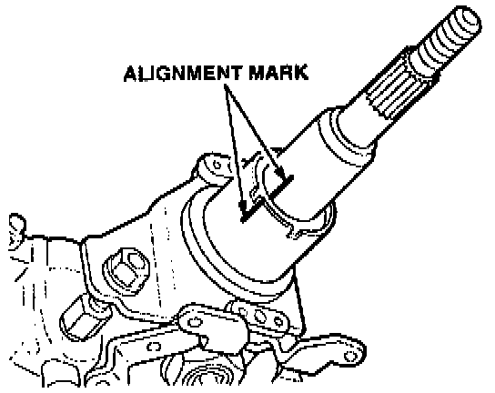
19. Reassemble the telescoping section of the steering column assembly by using the alignment marks you made in step 14.
20. Reassemble the steering column shaft in reverse order of disassembly. Make note of the following items:
^ Be sure to reinstall the preload adjustment screw the same number of turns recorded to remove it during disassembly (at step 11).
Steering Column Assembly:
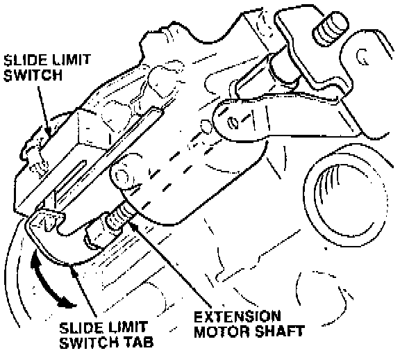
^ If the extension motor shaft was moved or rotated during disassembly, you may need to realign the slide limit switch tab to the slide limit switch.
Steering Column Assembly:
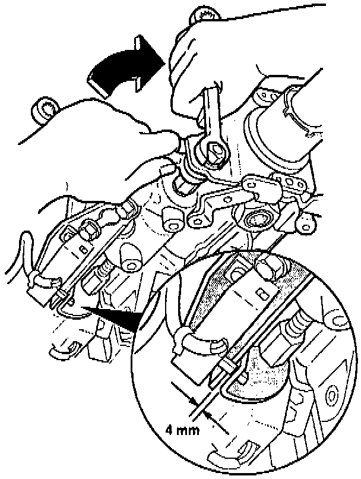
^ If necessary, rotate the extension motor shaft with a 10 mm wrench on the flat sides of the extension shaft until the limit switch tab engages with the slide limit switch. Make sure there is at least 4 mm clearance between the tab and the slide limit switch mounting bracket; then hold the extension motor shaft with the wrench, and tighten the 8 mm locknut.
21. After reassembly, extend and retract the steering column several times to ensure that the noise has been eliminated.
NOTE:
If the DPMS does not function properly, clear the DPMS control unit memory by removing fuse # 15 (7.5A) from the under-dash fuse box for at least 30 seconds. Recheck for proper operation.
WARRANTY CLAIM INFORMATION
In warranty:
The normal warranty applies.
Out of warranty:
Any repair performed after warranty expiration may be eligible for goodwill consideration by the District Technical Manager or your Zone Office. You must request consideration, and get a decision, before starting work.
Operation number: 510010
Flat rate time: 1.2 hour
Failed P/N: 53200-SP0-A91
Defect code: 042
Contention code: B07